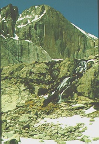

The Diamond is the pinnacle of climbing in Rocky Mountain National Park. Starting at 13,100 feet, it rises nearly 1,000 vertical feet to the upper slopes of Longs Peak.
The left side offers several routes, none easier than 5.10. The right side is mostly used by aid climbers. Due to the strenuous nature of the climb, all participants must pass physical and climbing evaluations.
Difficulty Level: Expert
Time: Two days
Physical Stress: Extreme